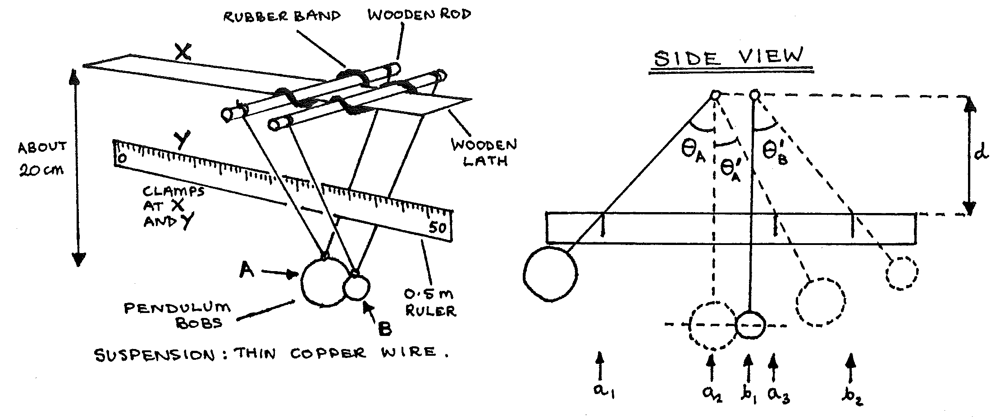
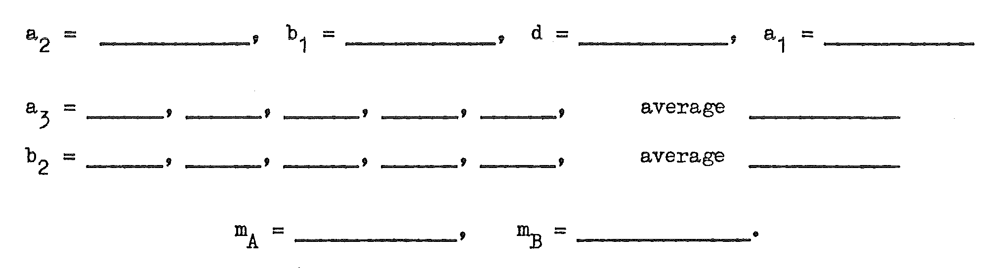
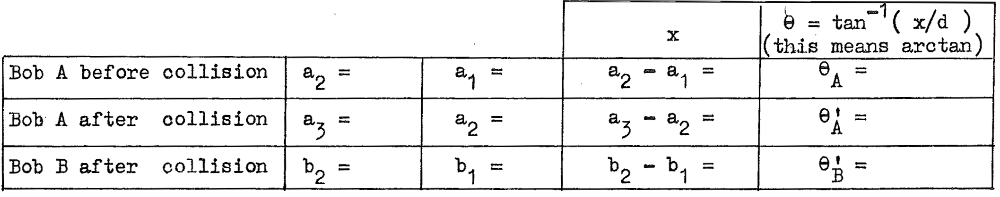

B1-1: Coefficient of Restitution¶
Apparatus¶
2 wooden rods (about \(200\text{m}\) long); wooden lath (about \(25\text{cm}\) long); 2 elastic bands; 2 pendulum bobs (1 large, 1 small); thin Cu wire; 2 \(0.5\text{m}\) rulers; stand; 2 bosses & clamps; G-clamp; triple beam balance.

Procedure¶
- Assemble the apparatus as above, ensuring that the lath and \(0.5\text{m}\) ruler are horizontal. Make sure that the centres of the pendulum bobs are on the same level, and that the bobs just touch.
- Pull bob A to the left and let it swing to collide with bob B to check the operation of the apparatus.
- With the bobs at rest, read values \(a_2\) and \(b_1\) on the \(0.5\text{m}\) ruler. (Position your eye carefully to avoid parallax). Measure length \(d\).
- Move bob A to the left until it touches the \(0.5\text{m}\) ruler. Read value \(a_1\).
- Release bob A, and note the furthest position that it reaches on the right after the collision (this is \(a_3\)).
- Repeat 4 and 5 to get five readings of \(a_3\) to average.
- Repeat 4, then release bob A, and note the furthest position that bob B reaches to the right after the collision (this is \(b_2\)).
- Repeat 7 to get five readings of \(b_2\) to average.
- Measure the masses of bob A (\(m_A\)) and bob B (\(m_B\)) using the beam balance.
Observations¶

Theory¶
It can be shown that a pendulum, length \(L\), moving through an angle \(\theta\) has a velocity change of:
In the experiment there is a collision, and momentum is conserved:
\[\begin{split}\sum\big(\text{momentum before collision}\big) &= \sum\big(\text{momentum after collision}\big)\\ m_A v_A + m_B v_B &= m_A v_A' + m_B v_B'\end{split}\]where \(v_A\), \(v_B\), \(v_{A^{'}}\), \(v_{B^{'}}\) are the velocities of bobs A and B before and after the collision respectively. However in the experiment \(v_B = 0\). Thus:
\[\frac{m_A}{m_B} = \frac{v_{B^{'}}}{v_A - v_{A^{'}}}\]Calculating velocities using \(\ref{eqn1}\), and substituting:
\[\frac{m_A}{m_B} = \frac{\sqrt{2\text{g}`.(1-\cos\theta_{B^{'}})}}{\sqrt{2\text{g}`.(1-\cos\theta_A)}-\sqrt{2\text{g}`.(1-\cos\theta_{A^{'}})}}\]Thus:
\[\frac{m_A}{m_B} = \frac{\sqrt{(1-\cos\theta_{B^{'}})}}{\sqrt{(1-\cos\theta_A)}-\sqrt{(1-\cos\theta_{A^{'}})}} \label{eqn2} \tag{equation 2}\]This equation can be used to calculate the ratio of the masses of the bobs.
To find the coefficient of restitution, \(e\) :
By definition:
\[\qquad e = - \frac{\big(\text{relative velocity after the collision}\big)}{\big(\text{relative velocity before the collision}\big)}\]Using \(\ref{eqn1}\) for these velocities:
\[e = \frac{\sqrt{1-\cos\theta_{B'}}-\sqrt{1-\cos\theta_{A'}}}{\sqrt{1-\cos\theta_{A}}} \label{eqn3} \tag{equation 3}\]
Analysis¶
Complete the following table to obtain values of \(\theta_A\), \(\theta_{A}'\), \(\theta_{B}'\).

Substitute the values of \(\theta_A\), \(\theta_{A}'\), \(\theta_{B}'\) calculated in the above table into \(\ref{eqn2}\) to calculate the ratio of the masses of the two pendulum bobs. Check the accuracy of the method using the readings of mass obtained directly using the beam balance. Comment on the differences in these ways of measuring mass, using either the ballistic balance (collision method), or the beam balance.
Substitute the values of \(\theta_A\), \(\theta_{A}'\), \(\theta_{B}'\) from the above table into \(\ref{eqn3}\) to calculate the coefficient of restitution for these pendulum bobs. Comment on the elasticity of the collision in your experiment if:
\[\begin{split}e &= 1 \qquad \text{collision is perfectly elastic} \\ e &= 0 \qquad \text{collision is completely inelastic}\end{split}\]Give simple examples to illustrate the energy changes that occur in collisions where:
- \(e = 1\)
- \(e = 0\)
- \(e = \big(\text{the value in your experiment}\big)\)